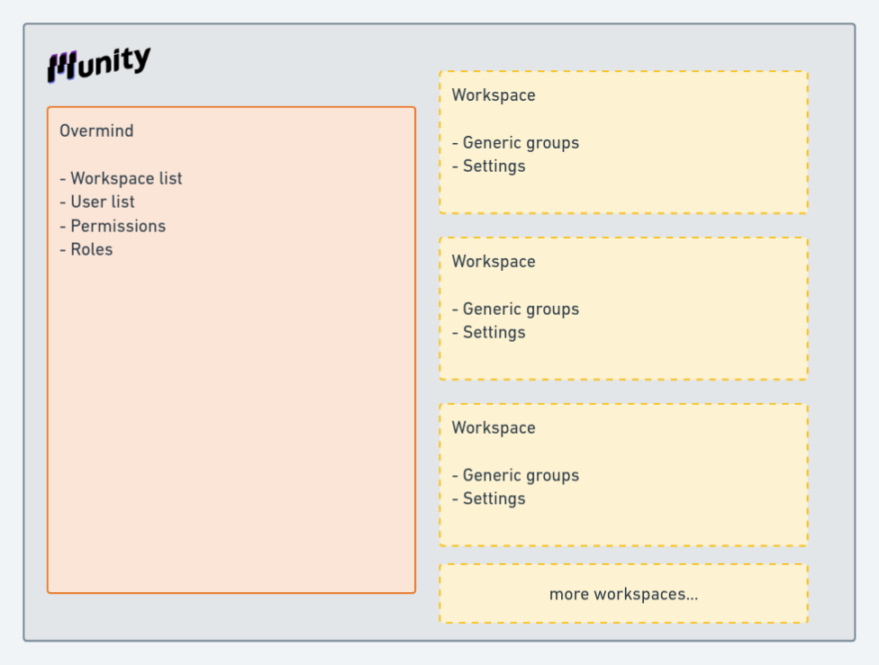
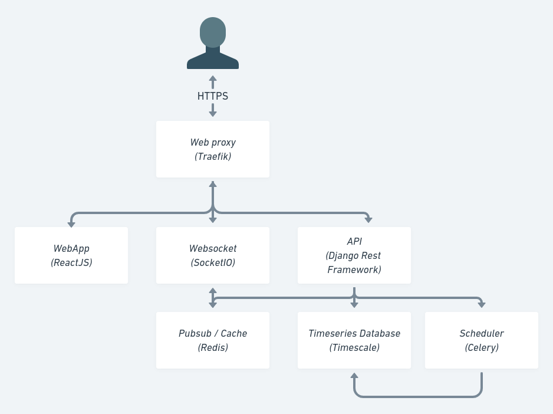

Welcome to Munity documentation
This document has been generated to this repository : https://github.com/munityapps/munity-doc Feel free to report Issues or send your Pullrequests to improve it.

Or just report any problem to our discord : https://discord.gg/6zmcnvnh
Thank you a lot !
What is Munity
Munity is a fullstack framework to build your SaaS really fast! It handles all configurations to start your SaaS
- A Progressive Web App with ReactJS, Redux, i18n, Prime React, Websocket... build with Typescript!
- An API build with django rest framework, already setup with many plugins (JWT, Timeseries DB, Mailing, Scheduler...)
- A docker configuration to start on local or deploy on your server, we can also handle hosting for you
Our goals :
- Accelerate all web project creation
- Help teams to build togethere and following same best practices
- Learn from community to improve community experience
Munity main concepts
There is two place to be in Munity
- Overmind
- Workspaces
At connection we check if an user has access to overmind or wanted workspace.

Overmind
The overmind can be access from the root route of your platform :
http://localhost/
The overmind is a place where you can access all your platform information, you will find : - A dashboard with metrics to have an overview on what's append - A list of workspaces (see below) - All your platform users seprated in "Workspace users" and "Superusers".
Workspaces
You client informations are separated in different workspaces. User can have access to one or many users
Workspace has it's own model registered in its area / database but some models are cross workspaces : - User list are located in overmind - Roles and rights are common for all workspaces
Model available out of the box
Munity framework came with the following models.
- Workspaces : module
munityapps/workspace, the needed tooling to work with workspaces - User : module
munityapps/user - GenericGroup : module
munityapps/genericgroups, all models can be groupable. There are the basic mechanisme to assemble things togethere. - Role : It is used in Munity to give access to a given resource to a user
- Permission : Role has permissions on resources. Permissions can be : list, retreive, update, create or delete. They exists for each resources.
With each of them list, form and a complete live cycle is already available.
Munity MOJOs
- "The code you write makes you a programmer. The code you delete makes you a good one. The code you don't have to write makes you a great one." - Mario Fusco
- "Keep it simple stupid"
- "Simplicity is the ultimate sophistication" - Leonardo da Vinci
technical stack

We use docker to work in local environment We use kubernetes to deploy in production
Munity has 5 main services :
- Web proxy
- Frontend
- Backend
- Timeseries/Relationnal database
- Websocket
Web proxy
We choose Traefik as a proxy because it is really simple to use and powerful. There is no configuration files needed only params in docker-compose.yml.
Frontend
- We choose React with Timescript to build Munity frontend. We really like the component approch of React and the community built around.
- To manage application state we choose Redux, easy to understand, visualize and debug.
- We choose Prime React to have a strong libraries of basic component and we like the theme approch to customise it.
- We add a translation system based on i18
- We choose socket.io to manage websockets
- To test application we use :
- Unit tests : Jest
- End to end tests : Cypress
- Score : Web vital
Backend
For backend we use Django rest framework for it simplicity and the very large range of features that the community provide. Backend use JWT approch to manage user sessions. To make functional test we use Newman from Postman to test all endpoints.
Timeseries and relational database
PostgresSQL has many interesting features, for exemple NoSQL embed in SQL Relationnal is a smart approch. Since we work with Data, a timeseries database is a mandatory for performance and scalability, so we use the Timescale surcharge.
Websocket
To update client from server we add a websocket server. It is a simply NodeJS server with socket.io connected to redis Pubsub to forward event to clients over channal.